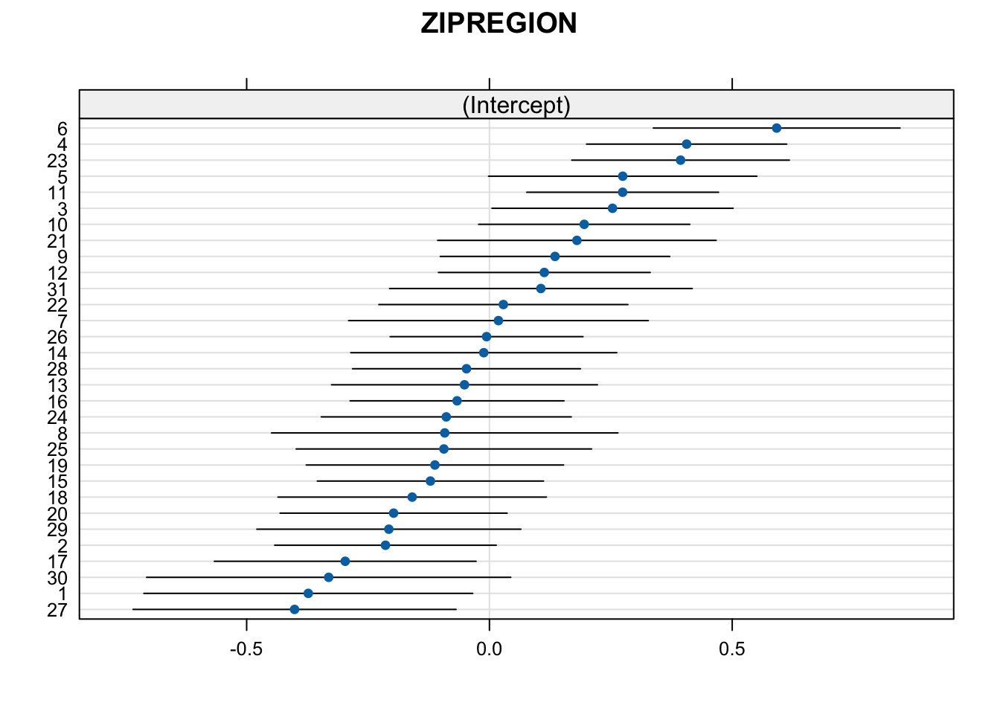
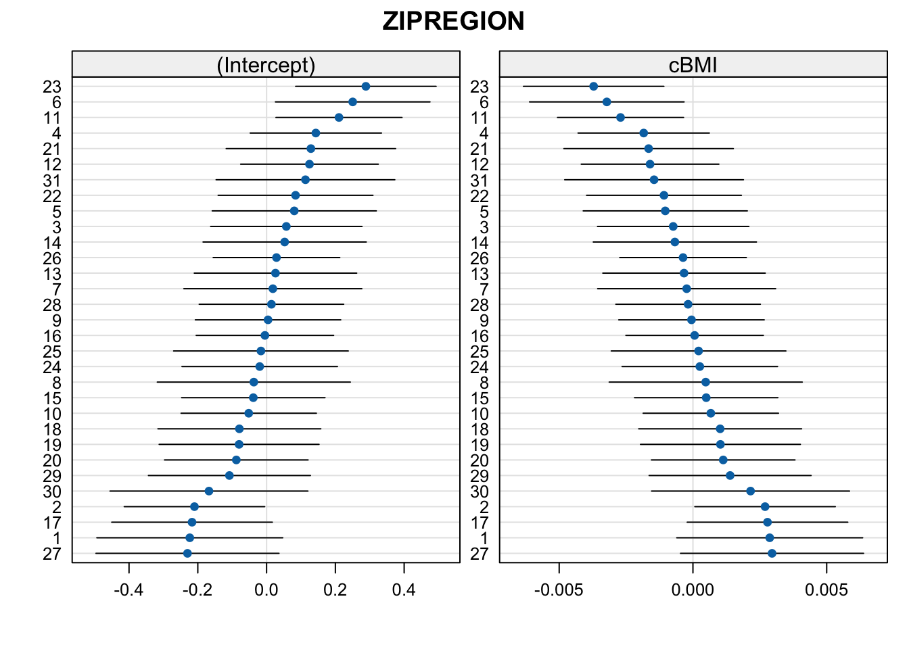

12 MLM v. GEE for Binary Outcomes
12.1 Overview
- Contrast the GEE approach with a simple random effects model with a binary outcome
- Illustrate more complex mulilevel glm issues with binary outcomes
New package alert! for generalized estimating equations we’ll use the geepack package
- You’ll need to install it before using it
12.2 HLM Model
Recall last week we modeled ED visit (yes/no) with the following predictors:
Predictors:
- SEX01 (Male / Female)
- RESPAGE_4CAT - 4 category age variable
- BMI
- RESPRACE_4CAT - White, Black, Asian, Other
- NPOV100 - indicator for poverty
Here are the results on the log-odds scale
| HOSPERA 2 | |||
|---|---|---|---|
| Predictors | Log-Odds | std. Error | p |
| (Intercept) | -1.16 | 0.11 | <0.001 |
| SEX01 [Female] | 0.13 | 0.06 | 0.021 |
| RESPAGE_4CAT35-49 | -0.11 | 0.12 | 0.343 |
| RESPAGE_4CAT50-64 | -0.12 | 0.11 | 0.246 |
| RESPAGE 4CAT [65+] | -0.01 | 0.10 | 0.937 |
| BMI | 0.13 | 0.03 | <0.001 |
| RESPRACE 4CAT [Black] | 0.44 | 0.08 | <0.001 |
| RESPRACE 4CAT [Asian] | -0.25 | 0.26 | 0.342 |
| RESPRACE 4CAT [Other] | 0.44 | 0.11 | <0.001 |
| N ZIPREGION | 31 | ||
| Observations | 6927 | ||
12.2.1 Interpreting odds ratios
Remember, the odds ratios here are “cluster specific.” Indeed, the entire model is focused on the individual level, not the cluster level.
## Estimate 2.5 % 97.5 %
## (Intercept) 0.314 0.255 0.387
## SEX01Female 1.139 1.020 1.273
## RESPAGE_4CAT35-49 0.894 0.710 1.126
## RESPAGE_4CAT50-64 0.885 0.720 1.088
## RESPAGE_4CAT65+ 0.992 0.810 1.215
## scale(BMI) 1.140 1.081 1.202
## RESPRACE_4CATBlack 1.549 1.330 1.805
## RESPRACE_4CATAsian 0.781 0.469 1.301
## RESPRACE_4CATOther 1.545 1.249 1.912Above, we must now interpret the association between sex and odds of ED visit as follows:
Holding all other variables constant, and the cluster / random effect constant, females have \(12\%\) greater odds of an ED visit compared to males
This is why the mixed-effects logistic regression is referred to as “cluster-specific” (compared to say, GEE which is a “population average model”)
12.3 Population Average Model with GEE
As we discussed, generalized estimating equations marginalize over the individuals and model the “population average” effect. This is great for our use of odds ratios, but not as good if we want to include more complex random effects
One annoying part here is that we need to supply complete data to the function geeglm, it will not automatically reduce the dataframe for us.
We must also put the observations in order by cluster (ZIPREGION) and change to a 0/1 numeric variable
PHMC18$PHILA <- ifelse(PHMC18$COUNTY == "Philadelphia", 1, 0)
PHMC18$PHILA <- factor(PHMC18$PHILA, levels = c(0,1), labels = c("Not Phila","Phila"))
PHMC18$ed_visit <- ifelse(PHMC18$HOSPERA2 == "0 visits", 0,1)
PHMC18_order <- PHMC18[order(PHMC18$ZIPREGION), ]
PHMC18_gee <- na.omit(PHMC18_order[,c("ed_visit","SEX01","RESPAGE_4CAT","BMI","RESPRACE_4CAT","ZIPREGION","PHILA")])pop_avg <- geeglm(ed_visit ~ SEX01 + RESPAGE_4CAT + scale(BMI) + RESPRACE_4CAT, id = ZIPREGION, corstr = "exchangeable", scale.fix = TRUE, data = PHMC18_gee, family=binomial)
summary(pop_avg)##
## Call:
## geeglm(formula = ed_visit ~ SEX01 + RESPAGE_4CAT + scale(BMI) +
## RESPRACE_4CAT, family = binomial, data = PHMC18_gee, id = ZIPREGION,
## corstr = "exchangeable", scale.fix = TRUE)
##
## Coefficients:
## Estimate Std.err Wald Pr(>|W|)
## (Intercept) -1.149729 0.102404 126.054 < 2e-16 ***
## SEX01Female 0.130091 0.041740 9.714 0.00183 **
## RESPAGE_4CAT35-49 -0.111381 0.100455 1.229 0.26753
## RESPAGE_4CAT50-64 -0.122429 0.099943 1.501 0.22058
## RESPAGE_4CAT65+ -0.008848 0.092650 0.009 0.92392
## scale(BMI) 0.130595 0.025419 26.396 2.78e-07 ***
## RESPRACE_4CATBlack 0.437663 0.066523 43.285 4.73e-11 ***
## RESPRACE_4CATAsian -0.246682 0.258178 0.913 0.33934
## RESPRACE_4CATOther 0.435724 0.093036 21.934 2.82e-06 ***
## ---
## Signif. codes: 0 '***' 0.001 '**' 0.01 '*' 0.05 '.' 0.1 ' ' 1
##
## Correlation structure = exchangeable
## Scale is fixed.
##
## Link = identity
##
## Estimated Correlation Parameters:
## Estimate Std.err
## alpha 0.004531 0.002029
## Number of clusters: 31 Maximum cluster size: 410Comparing with above, we can see that the results are nearly identical. One reason for that can be seen by inspecting the \(\alpha\) parameter, estimated to be almost zero. This means there’s very little within-group correlation, so we might as well model this as independent data.
The good news is that the cluster-specific and population average models converge, so we could consider the confidence intervals from the MLM to be accurate.
Here’s the GEE confidence intervals for the odds-ratios
## # A tibble: 9 × 7
## term estimate std.error statistic p.value conf.low conf.high
## <chr> <dbl> <dbl> <dbl> <dbl> <dbl> <dbl>
## 1 (Intercept) 0.317 0.102 126. 0 0.259 0.387
## 2 SEX01Female 1.14 0.0417 9.71 1.83e- 3 1.05 1.24
## 3 RESPAGE_4CAT35-49 0.895 0.100 1.23 2.68e- 1 0.735 1.09
## 4 RESPAGE_4CAT50-64 0.885 0.0999 1.50 2.21e- 1 0.727 1.08
## 5 RESPAGE_4CAT65+ 0.991 0.0926 0.00912 9.24e- 1 0.827 1.19
## 6 scale(BMI) 1.14 0.0254 26.4 2.78e- 7 1.08 1.20
## 7 RESPRACE_4CATBlack 1.55 0.0665 43.3 4.73e-11 1.36 1.76
## 8 RESPRACE_4CATAsian 0.781 0.258 0.913 3.39e- 1 0.471 1.30
## 9 RESPRACE_4CATOther 1.55 0.0930 21.9 2.82e- 6 1.29 1.8612.4 HLM with level-2 predictors
Despite the nice properties of the population average approach, it is arguably less suited to situations in which we have random slopes as well as other predictors at level 2
From a philosophical perspective, we would use HLM if our questions were best answered by them
We’ll have a look at two additional models, mirroring our approach in ordinary HLM
12.4.1 Random slopes
You’ll find that things can get quite messy when you try to let all the slopes be random. We’ll stick with one that might make sense:
- Examine the model fit and \(\tau_{11}\) for
BMI- it is conceivable that the relationship between BMI and odds of an ED visit might vary acrossZIPREGION
To do this properly, we’ll group-center BMI
bmi <- PHMC18 |>
group_by(ZIPREGION) |>
summarise(MeanBMI = mean(BMI, na.rm = T))
for (i in 1:nrow(PHMC18)){
if (is.na(PHMC18$BMI[i])){
next
} else {
s = PHMC18$ZIPREGION[i]
if (is.na(s)){
next
} else {
PHMC18$cBMI[i] = PHMC18$BMI[i] - bmi$MeanBMI[s]
}
}
}rand_sl <- glmer(HOSPERA2 ~ SEX01 + RESPAGE_4CAT + cBMI + RESPRACE_4CAT + (cBMI|ZIPREGION), family = binomial, data = PHMC18)
summary(rand_sl)## Generalized linear mixed model fit by maximum likelihood (Laplace Approximation) ['glmerMod']
## Family: binomial ( logit )
## Formula: HOSPERA2 ~ SEX01 + RESPAGE_4CAT + cBMI + RESPRACE_4CAT + (cBMI | ZIPREGION)
## Data: PHMC18
##
## AIC BIC logLik -2*log(L) df.resid
## 8307 8389 -4141 8283 7196
##
## Scaled residuals:
## Min 1Q Median 3Q Max
## -0.969 -0.612 -0.544 1.241 2.392
##
## Random effects:
## Groups Name Variance Std.Dev. Corr
## ZIPREGION (Intercept) 3.11e-02 0.17649
## cBMI 5.15e-06 0.00227 -1.00
## Number of obs: 7208, groups: ZIPREGION, 31
##
## Fixed effects:
## Estimate Std. Error z value Pr(>|z|)
## (Intercept) -1.17684 0.10590 -11.11 < 2e-16 ***
## SEX01Female 0.11885 0.05564 2.14 0.033 *
## RESPAGE_4CAT35-49 -0.07859 0.11528 -0.68 0.495
## RESPAGE_4CAT50-64 -0.09463 0.10390 -0.91 0.362
## RESPAGE_4CAT65+ 0.02196 0.10215 0.22 0.830
## cBMI 0.01947 0.00459 4.24 2.2e-05 ***
## RESPRACE_4CATBlack 0.45496 0.07790 5.84 5.2e-09 ***
## RESPRACE_4CATAsian -0.29957 0.25309 -1.18 0.237
## RESPRACE_4CATOther 0.44251 0.10693 4.14 3.5e-05 ***
## ---
## Signif. codes: 0 '***' 0.001 '**' 0.01 '*' 0.05 '.' 0.1 ' ' 1
##
## Correlation of Fixed Effects:
## (Intr) SEX01F RESPAGE_4CAT3 RESPAGE_4CAT5 RESPAGE_4CAT6 cBMI RESPRACE_4CATB
## SEX01Female -0.269
## RESPAGE_4CAT3 -0.698 -0.037
## RESPAGE_4CAT5 -0.786 -0.040 0.716
## RESPAGE_4CAT6 -0.806 -0.047 0.729 0.818
## cBMI 0.032 0.026 -0.056 -0.088 -0.051
## RESPRACE_4CATB -0.171 -0.080 0.009 0.026 0.044 -0.113
## RESPRACE_4CATA -0.134 0.031 0.055 0.086 0.104 0.011 0.079
## RESPRACE_4CATO -0.219 -0.023 0.079 0.120 0.152 -0.037 0.258
## RESPRACE_4CATA
## SEX01Female
## RESPAGE_4CAT3
## RESPAGE_4CAT5
## RESPAGE_4CAT6
## cBMI
## RESPRACE_4CATB
## RESPRACE_4CATA
## RESPRACE_4CATO 0.065
## optimizer (Nelder_Mead) convergence code: 0 (OK)
## boundary (singular) fit: see help('isSingular')The fit is possibly singular as we can see the small variance of the BMI slopes, plus the perfect correlation of slopes and intercepts.
The solution to the problem is often not clear. The most practical thing to do would be to revert back to the random-intercept model.
12.4.2 Level 2 predictors
In our reading, it was argued that GEE was better for these macro-micro situations, which is not necessarily true. Especially because in HLM, a level-2 variable can be entered wherever we like, and usually, it’s a predictor of the intercept. In that way, the effect is not on individuals, but on the mean. The odds ratio would then be that effect in a group with \(u_{0j} = 0\) and again, we can investigate the variations in the effects as well as predictions
Let’s take a look at a county-based variable: is the ZIPREGION in Philadelphia County or not?
# collapse county into an indicator for Philadelphia County
PHMC18$PHILA <- ifelse(PHMC18$COUNTY == "Philadelphia", 1, 0)
PHMC18$PHILA <- factor(PHMC18$PHILA, levels = c(0,1), labels = c("Not Phila","Phila"))lvl2 <- glmer(HOSPERA2 ~ SEX01 + RESPAGE_4CAT + cBMI + RESPRACE_4CAT + PHILA + (1|ZIPREGION), family = binomial, data = PHMC18)
summary(lvl2)## Generalized linear mixed model fit by maximum likelihood (Laplace Approximation) ['glmerMod']
## Family: binomial ( logit )
## Formula: HOSPERA2 ~ SEX01 + RESPAGE_4CAT + cBMI + RESPRACE_4CAT + PHILA + (1 | ZIPREGION)
## Data: PHMC18
##
## AIC BIC logLik -2*log(L) df.resid
## 8304 8380 -4141 8282 7197
##
## Scaled residuals:
## Min 1Q Median 3Q Max
## -0.991 -0.610 -0.543 1.238 2.379
##
## Random effects:
## Groups Name Variance Std.Dev.
## ZIPREGION (Intercept) 0.0292 0.171
## Number of obs: 7208, groups: ZIPREGION, 31
##
## Fixed effects:
## Estimate Std. Error z value Pr(>|z|)
## (Intercept) -1.20372 0.10968 -10.98 < 2e-16 ***
## SEX01Female 0.11744 0.05566 2.11 0.035 *
## RESPAGE_4CAT35-49 -0.07713 0.11528 -0.67 0.503
## RESPAGE_4CAT50-64 -0.09035 0.10394 -0.87 0.385
## RESPAGE_4CAT65+ 0.02482 0.10212 0.24 0.808
## cBMI 0.01906 0.00442 4.31 1.6e-05 ***
## RESPRACE_4CATBlack 0.43717 0.08059 5.42 5.8e-08 ***
## RESPRACE_4CATAsian -0.30598 0.25326 -1.21 0.227
## RESPRACE_4CATOther 0.43157 0.10763 4.01 6.1e-05 ***
## PHILAPhila 0.07661 0.08863 0.86 0.387
## ---
## Signif. codes: 0 '***' 0.001 '**' 0.01 '*' 0.05 '.' 0.1 ' ' 1
##
## Correlation of Fixed Effects:
## (Intr) SEX01F RESPAGE_4CAT3 RESPAGE_4CAT5 RESPAGE_4CAT6 cBMI RESPRACE_4CATB
## SEX01Female -0.253
## RESPAGE_4CAT3 -0.678 -0.037
## RESPAGE_4CAT5 -0.768 -0.041 0.716
## RESPAGE_4CAT6 -0.784 -0.047 0.729 0.818
## cBMI 0.049 0.024 -0.058 -0.086 -0.047
## RESPRACE_4CATB -0.071 -0.069 0.006 0.013 0.034 -0.092
## RESPRACE_4CATA -0.119 0.032 0.055 0.085 0.103 0.015 0.084
## RESPRACE_4CATO -0.169 -0.019 0.077 0.114 0.148 -0.031 0.277
## PHILAPhila -0.272 -0.026 0.016 0.037 0.021 0.021 -0.314
## RESPRACE_4CATA RESPRACE_4CATO
## SEX01Female
## RESPAGE_4CAT3
## RESPAGE_4CAT5
## RESPAGE_4CAT6
## cBMI
## RESPRACE_4CATB
## RESPRACE_4CATA
## RESPRACE_4CATO 0.068
## PHILAPhila -0.038 -0.144Interestingly, the log-odds of an ED visit does not seem to differ between residents in and outside of Philadelphia County
12.5 Compare to GEE
pop_avg2 <- geeglm(ed_visit ~ SEX01 + RESPAGE_4CAT + scale(BMI) + RESPRACE_4CAT + PHILA, id = ZIPREGION, corstr = "exchangeable", scale.fix = TRUE, data = PHMC18_gee, family=binomial)
summary(pop_avg2)##
## Call:
## geeglm(formula = ed_visit ~ SEX01 + RESPAGE_4CAT + scale(BMI) +
## RESPRACE_4CAT + PHILA, family = binomial, data = PHMC18_gee,
## id = ZIPREGION, corstr = "exchangeable", scale.fix = TRUE)
##
## Coefficients:
## Estimate Std.err Wald Pr(>|W|)
## (Intercept) -1.17527 0.09761 144.98 < 2e-16 ***
## SEX01Female 0.12871 0.04169 9.53 0.002 **
## RESPAGE_4CAT35-49 -0.11005 0.10032 1.20 0.273
## RESPAGE_4CAT50-64 -0.11870 0.09932 1.43 0.232
## RESPAGE_4CAT65+ -0.00691 0.09211 0.01 0.940
## scale(BMI) 0.13082 0.02543 26.47 2.7e-07 ***
## RESPRACE_4CATBlack 0.41433 0.06824 36.86 1.3e-09 ***
## RESPRACE_4CATAsian -0.25493 0.26134 0.95 0.329
## RESPRACE_4CATOther 0.42189 0.09023 21.86 2.9e-06 ***
## PHILAPhila 0.07641 0.07914 0.93 0.334
## ---
## Signif. codes: 0 '***' 0.001 '**' 0.01 '*' 0.05 '.' 0.1 ' ' 1
##
## Correlation structure = exchangeable
## Scale is fixed.
##
## Link = identity
##
## Estimated Correlation Parameters:
## Estimate Std.err
## alpha 0.00424 0.00222
## Number of clusters: 31 Maximum cluster size: 410lvl2.a <- glmer(HOSPERA2 ~ SEX01 + RESPAGE_4CAT + cBMI + RESPRACE_4CAT + PHILA + PHILA:SEX01 + (1|ZIPREGION), family = binomial, data = PHMC18)
summary(lvl2.a)## Generalized linear mixed model fit by maximum likelihood (Laplace Approximation) ['glmerMod']
## Family: binomial ( logit )
## Formula: HOSPERA2 ~ SEX01 + RESPAGE_4CAT + cBMI + RESPRACE_4CAT + PHILA +
## PHILA:SEX01 + (1 | ZIPREGION)
## Data: PHMC18
##
## AIC BIC logLik -2*log(L) df.resid
## 8306 8388 -4141 8282 7196
##
## Scaled residuals:
## Min 1Q Median 3Q Max
## -0.987 -0.612 -0.543 1.242 2.394
##
## Random effects:
## Groups Name Variance Std.Dev.
## ZIPREGION (Intercept) 0.0292 0.171
## Number of obs: 7208, groups: ZIPREGION, 31
##
## Fixed effects:
## Estimate Std. Error z value Pr(>|z|)
## (Intercept) -1.21741 0.11290 -10.78 < 2e-16 ***
## SEX01Female 0.14091 0.07174 1.96 0.05 *
## RESPAGE_4CAT35-49 -0.07768 0.11529 -0.67 0.50
## RESPAGE_4CAT50-64 -0.09138 0.10396 -0.88 0.38
## RESPAGE_4CAT65+ 0.02503 0.10213 0.25 0.81
## cBMI 0.01913 0.00442 4.33 1.5e-05 ***
## RESPRACE_4CATBlack 0.43943 0.08070 5.45 5.2e-08 ***
## RESPRACE_4CATAsian -0.30420 0.25330 -1.20 0.23
## RESPRACE_4CATOther 0.43321 0.10768 4.02 5.7e-05 ***
## PHILAPhila 0.11263 0.11256 1.00 0.32
## SEX01Female:PHILAPhila -0.05882 0.11331 -0.52 0.60
## ---
## Signif. codes: 0 '***' 0.001 '**' 0.01 '*' 0.05 '.' 0.1 ' ' 1
##
## Correlation of Fixed Effects:
## (Intr) SEX01Fm RESPAGE_4CAT3 RESPAGE_4CAT5 RESPAGE_4CAT6 cBMI RESPRACE_4CATB
## SEX01Female -0.340
## RESPAGE_4CAT3 -0.657 -0.035
## RESPAGE_4CAT5 -0.742 -0.043 0.716
## RESPAGE_4CAT6 -0.762 -0.034 0.729 0.818
## cBMI 0.039 0.039 -0.058 -0.087 -0.047
## RESPRACE_4CATB -0.081 -0.020 0.005 0.012 0.034 -0.089
## RESPRACE_4CATA -0.119 0.034 0.055 0.085 0.103 0.015 0.085
## RESPRACE_4CATO -0.171 0.004 0.077 0.114 0.148 -0.029 0.278
## PHILAPhila -0.354 0.376 0.007 0.018 0.019 0.037 -0.213
## SEX01F:PHIL 0.235 -0.631 0.009 0.018 -0.005 -0.033 -0.054
## RESPRACE_4CATA RESPRACE_4CATO PHILAP
## SEX01Female
## RESPAGE_4CAT3
## RESPAGE_4CAT5
## RESPAGE_4CAT6
## cBMI
## RESPRACE_4CATB
## RESPRACE_4CATA
## RESPRACE_4CATO 0.069
## PHILAPhila -0.021 -0.095
## SEX01F:PHIL -0.014 -0.029 -0.61612.5.1 Visualizing REs
Finally, there are nice plot methods for visualizing the random effects themselves. This is easier with a smaller number of clusters, but it’s often nice.
Let’s first look at the unconditional variance of the intercepts:
unc_mod <- glmer(HOSPERA2 ~ (1|ZIPREGION), family = binomial, data = PHMC18)
require(lattice)
dotplot(ranef(unc_mod))## $ZIPREGION
We can also look at conditional variance, and here, we’ll plot the slopes even though the model was singular. We do it in two separate plots because the estimated slope random effects are very small compared to the intercept random effects
## $ZIPREGION